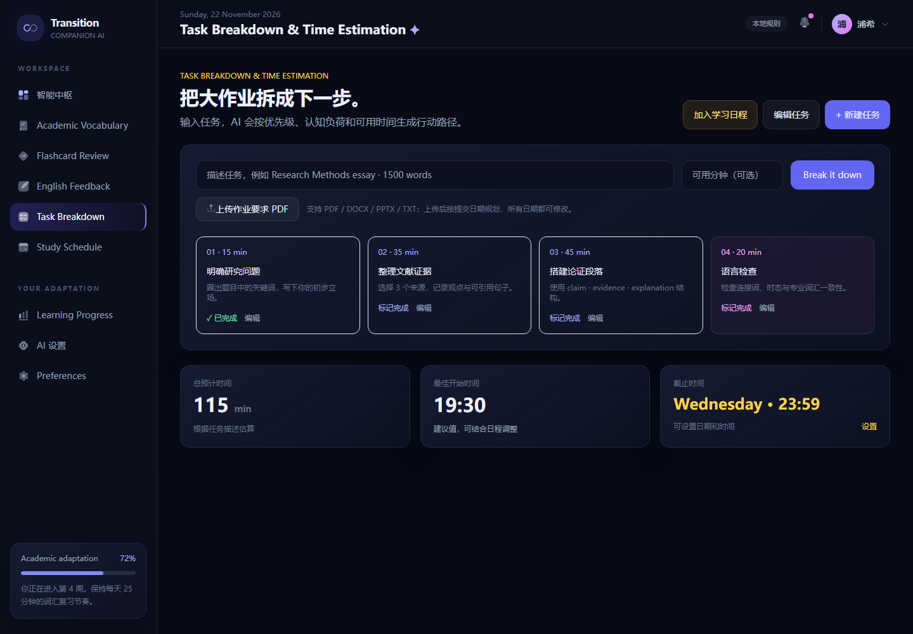
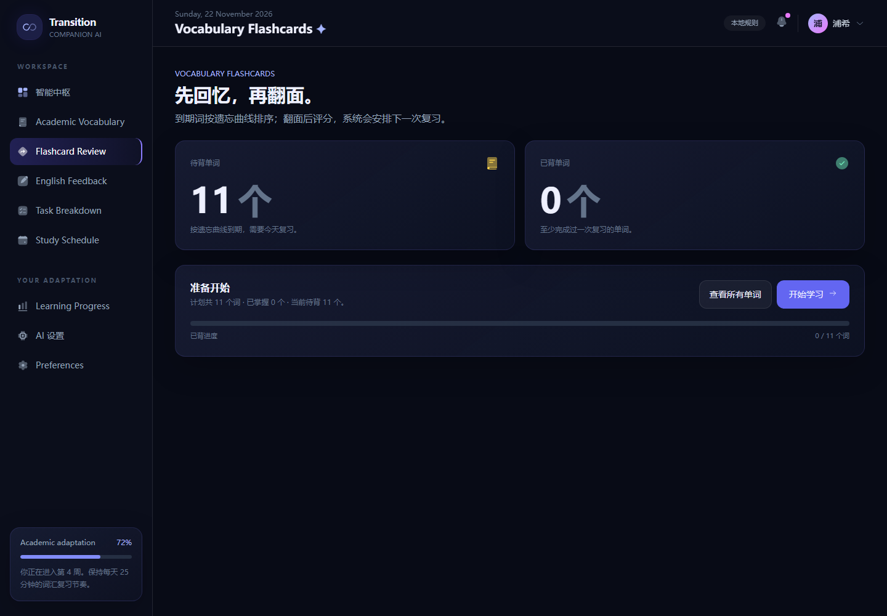

Transition Companion：离线优先的 AI 学习助手
面向英语授课课程的学习助手：上传 syllabus、课件或作业要求，提取课程术语，生成学术写作反馈，并把大作业拆成按提交日期执行的任务与学习日程。
- 我的角色
- 负责技术方案与实现：FastAPI 后端、原生 JS 前端、数据处理、测试与文档；队友负责原型设计和需求梳理。
- 使用技术
- Python、FastAPI、Pydantic、原生 HTML/CSS/JavaScript、原子 JSON Store、pytest、Git
- 当前结果
- 7 个功能页面；82 项 pytest 通过；30/30 条规则引擎评估通过；无 API key 也能离线完成主要流程。
查看背景、方法、验证与反思
背景
英语授课课程里，学生通常能读懂 syllabus，却很难判断哪些词是真正的课程术语，也很难把一个大作业拆成每天能完成的小步骤。原有版本只是一个静态页面，不能上传文件，也没有真实的数据流。
方法
采用“规则引擎优先、LLM 可选”的架构：没有 API key 时，词汇、反馈、任务拆解和日程都能运行；模型只作为增强层，失败时自动回退，并触发 60 秒熔断。PDF/DOCX/PPTX/TXT 会先提取为带页码/幻灯片标签的文本，再用于术语排序和来源引用。
作业规划
作业要求会先识别提交物和多个 deadline，再为每个截止日期生成一个阶段，默认提前两天完成。没有可读日期时标记为“待设置”，不沿用旧任务的截止时间；任务卡支持编辑、Shift 多选批量改日期，并可一键加入周/日/月日程。
验证
用 82 项 pytest 覆盖 API、文件上传边界、日期解析、多 deadline、存储和词汇复习；用 30 条确定性评估检查规则引擎；再用 headless Chrome 检查在线、离线和 file:// 三种渲染方式。测试重点是失败时是否有明确回退，而不只是“正常路径能跑”。
局限
目前是单用户、本地优先版本：没有鉴权，使用 JSON 文档存储，不适合多用户并发；扫描版 PDF 和图片公式没有 OCR；模型输入仍受上下文长度限制；重启时词汇计划会重置。网站和项目都还在持续完善。
下一步
补充登录与用户隔离，把存储迁移到 SQLite/Postgres；为扫描件加入 OCR 或视觉模型；补充真实模型质量评估；再整理一个数据分析方向的项目。


项目源码与在线演示仍在整理中，暂未公开；如果你对实现细节感兴趣，欢迎邮件交流。